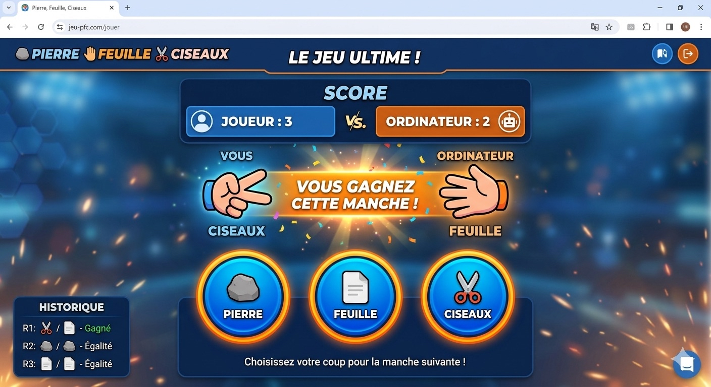

Projet personnel
Application Web - Jeu du Pierre-Feuille-Ciseaux
Ce projet consiste en la réalisation d'une application de jeu interactive. L'objectif principal est de développer une logique algorithmique solide pour gérer le choix aléatoire de l'ordinateur, le choix de l'utilisateur, et déterminer de manière automatisée le vainqueur de chaque manche selon les règles du jeu.
Le script intègre également la gestion dynamique du DOM pour mettre à jour les scores en temps réel, afficher les animations des choix et réinitialiser la partie. Ce projet démontre la maîtrise des structures conditionnelles complexes et des événements utilisateurs.

Interface de l'application et rendu visuel des parties de jeu